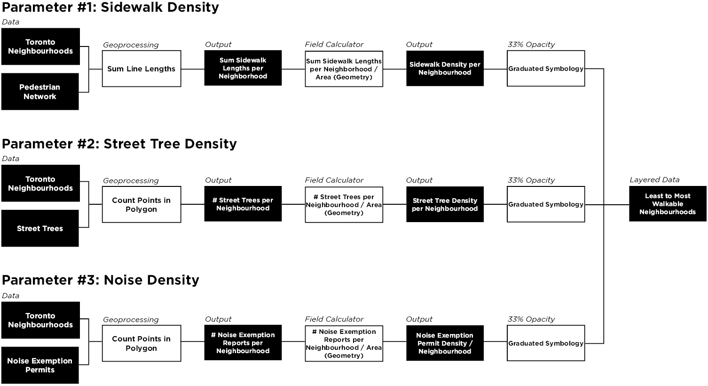
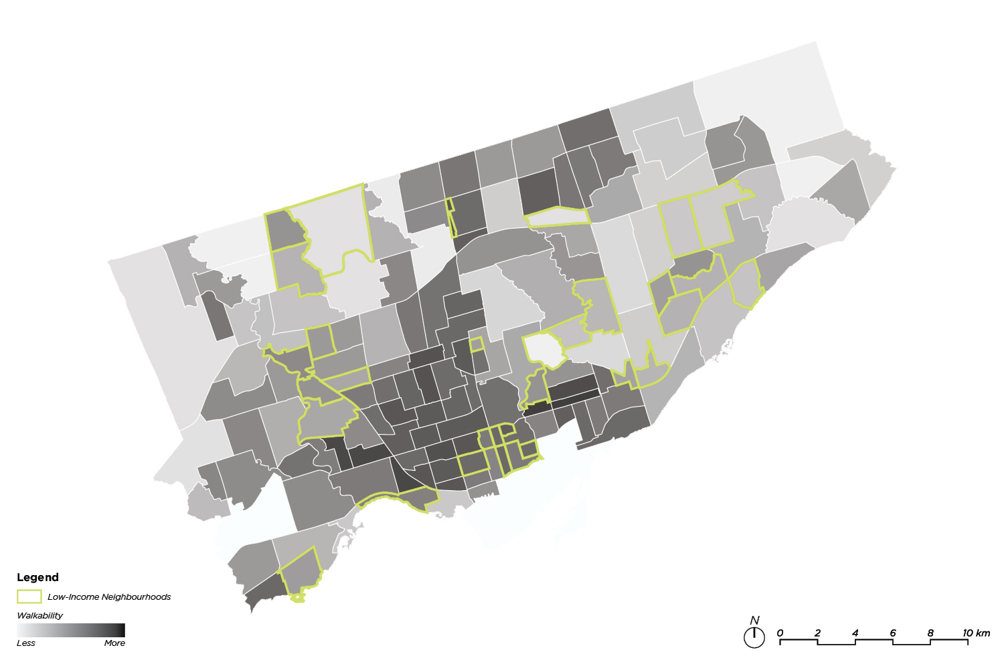
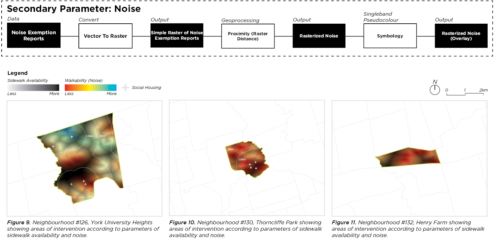
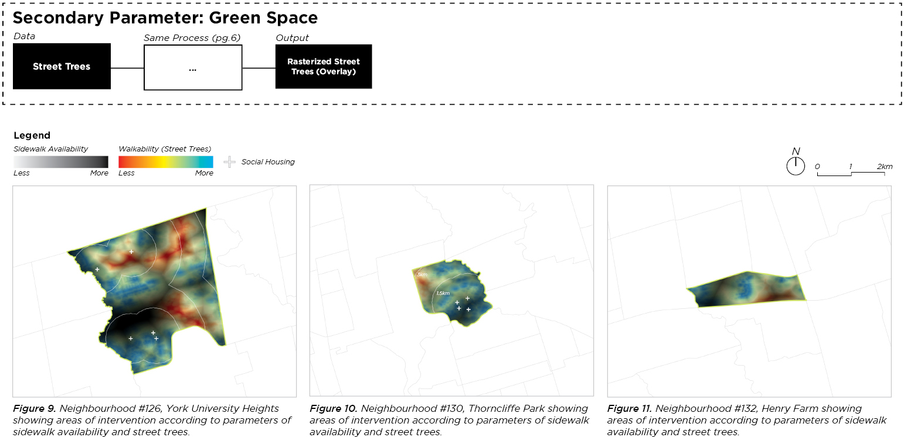
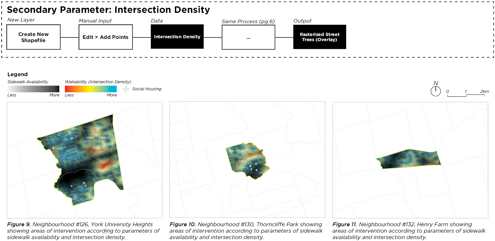
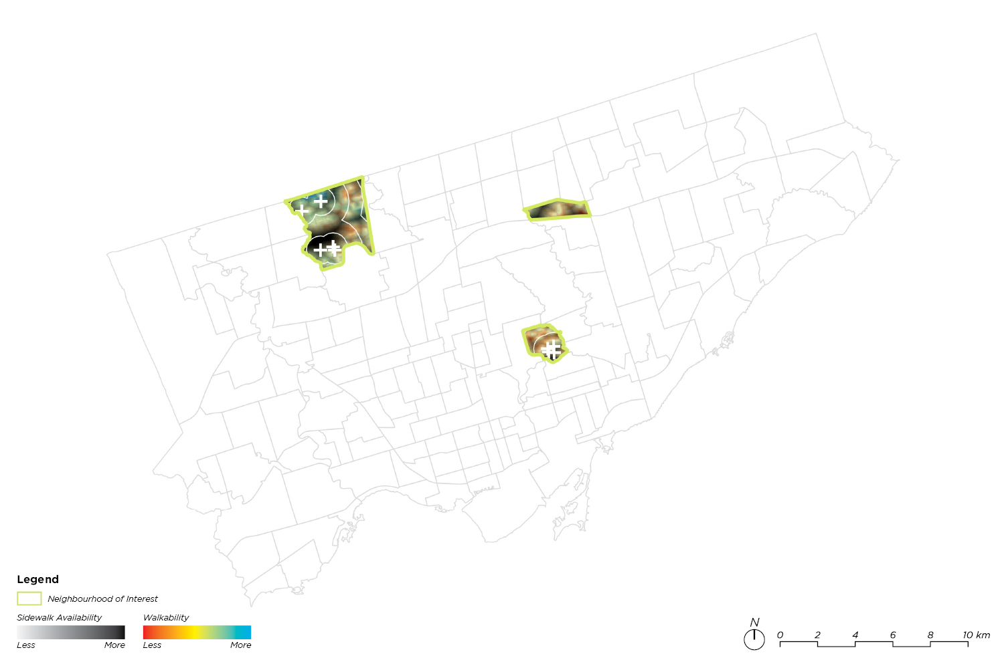

| 2401 | Walkable Neighbourhoods | Analysis |
In 2012, the City of Toronto released “The Walkable City: Neighbourhood Design and Preferences, Travel Choices and Health” in which a walkability index based on parameters of Residental Density, Retail Ratio, Land Use Mix and Intersection Density was produced. While this index took a pragmatic approach to walkability through the top down lens of efficiency and proximity, it didn’t consider the human and sensory conditions that make up a pleasant walk. This project seeks to analyze the City of Toronto’s level of walkability through a new lens by assigning non-conventional parameters that engages with the human experience instead of the more objective approach within the City of Toronto’s studies of walkability.
Collaborator: Mahara Falif
Course: Urban Analysis and Simulation
Course Instructor: Cameron Parkin, University of Waterloo


Identifying neighbourhoods of interest using three parameters for walkability: sidewalk density, street tree density, and noise density. These factors were weighed equally (33%) and overlaid with data taken from the City of Toronto’s 2021 census to identify neighbourhoods of low income with the lowest walkability score.

Analyzing the selected neighbourhoods (York University Heights, Thorncliffe Park, Henry Farm) to identify areas of intervention according to parameters of sidewalk availability and noise.

Analyzing the selected neighbourhoods to identify areas of intervention according to parameters of sidewalk availability and greenspace.

Analyzing the selected neighbourhoods to identify areas of intervention according to parameters of sidewalk availability and intersection density.

Map of the City of Toronto and our three neighbourhoods of interest, showing a fine grain analysis of walkability based on street trees, noise exemption reports, and sidewalk density.